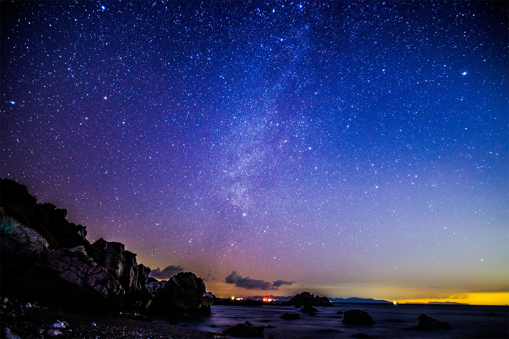
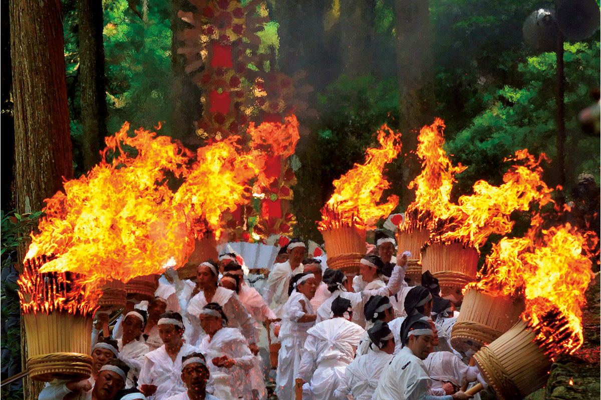
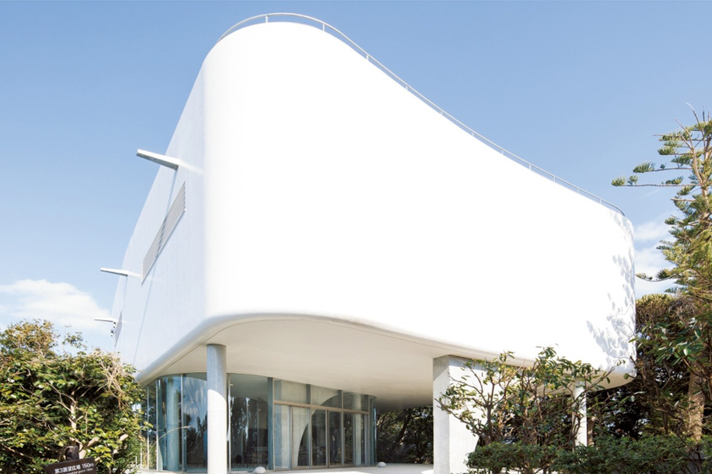
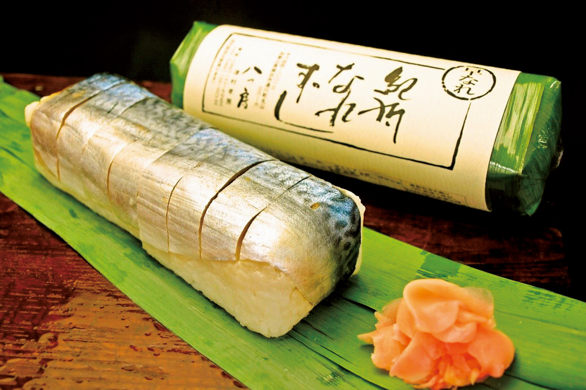
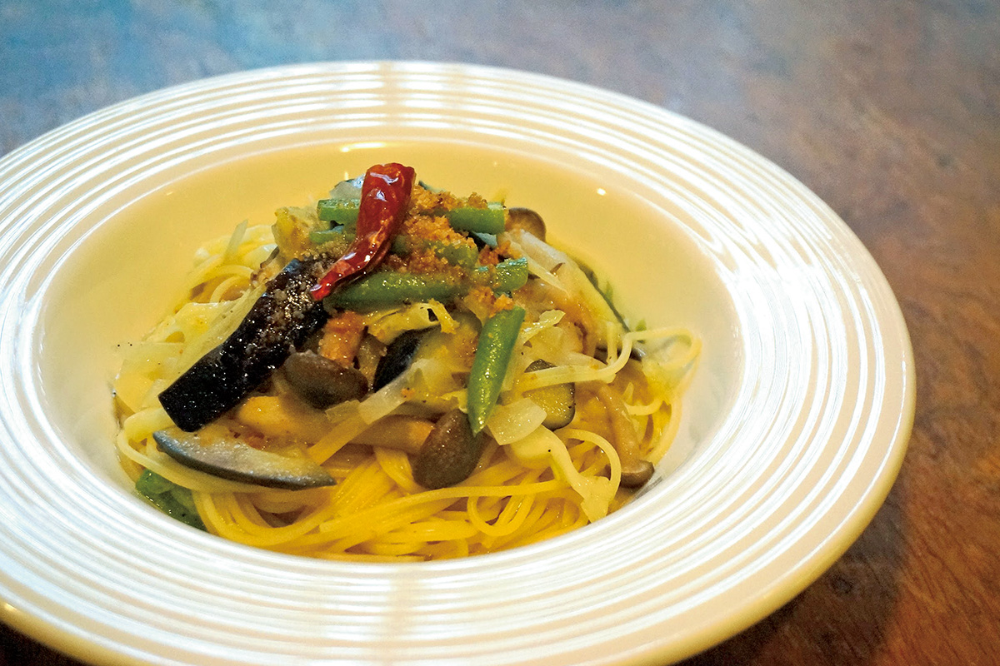
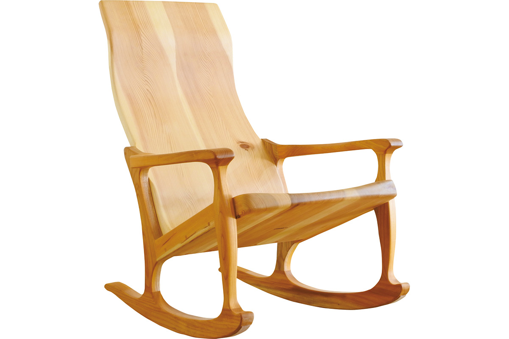
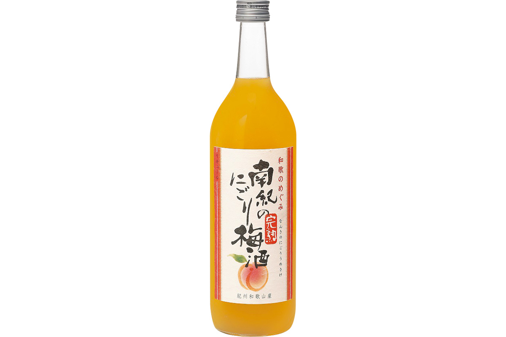

Префектура Вакаяма
Вакаяма: монастырь на горе, пламя на паломническом пути и сливовое вино

Полоса Млечного Пути поднимается над скалистым берегом и тёмным морем, у самой воды видны камни.
Самый южный край главного острова, где буддийский центр на вершине горы смотрит на океан, а по древним тропам до сих пор идут паломники. Разбираем, за чем ехать в Вакаяму: от квашеной рыбы до огненного обряда у водопада.
Карта: 65 мест из 16 статей · все статьи о Вакаяме
Карта
Вакаяма на карте
65 мест из наших статей о Вакаяме: гора Коя, тропы Кумано-кодо, огненный праздник Нати, онсэны Сирахама и Кацуура, умэбоси из Минабэ. Нажмите на точку, чтобы открыть статью.
Пунктирный круг означает, что точка примерная: место находится в этом районе или на этом острове.
О префектуре
Полуостров на самом юге главного острова
Вакаяма лежит на западной стороне крупнейшего полуострова Ким, у самой южной точки острова Хонсю. Здесь горный монастырский центр Коя-сан, три святилища Кумано, берег Тихого океана и необычные скалы на побережье.
Имя префектуре дала бухта Вака-но ура: говорят, Тоётоми Хидэёси (1537–1598), полководец, объединивший страну, осмотрел её и назвал свой замок «Вакаяма-дзё». В эпоху Эдо земли держал Токугава Ёринобу (1602–1671), основатель ветви Кисю рода Токугава, а эта ветвь дала стране восьмого сёгуна Токугаву Ёсимунэ (1684–1751), уроженца здешних мест.
Климат тёплый, потому земледелие здесь сильное: мандарины и слива ума занимают первое место в стране, а хассяку, сливы и киви входят в число лидеров. Мягкие условия позволили также заниматься разведением больших панд: в парке аттракционов исследования начали в 1994 году и добились рождения и выращивания шестнадцати животных.
Что посмотреть
Тропа, которой больше тысячи лет
Гора Коя-сан
В начале эпохи Хэйан буддийский монах Кукай (774–835), основатель школы Сингон, заложил здесь главный духовный центр японского буддизма. Всю гору считают единым храмовым двором и называют Конгобу-дзи, а паломники и сегодня ночуют в монастырских гостиницах.
- Справки
- ассоциация монастырских гостиниц Коя-сан
- Телефон
- +81 736-56-2616
Что ещё посмотреть
- Ущелье Хяккэн-дзан, скалы и вода в верховьях реки
- Острова Томогасима, необитаемые острова в проливе
- Водопад Нати, самый высокий водопад страны
Праздники
Пятьдесят килограммов огня на дороге
Огненный праздник Нати
Главный обряд святилища Кумано Нати тайся. Большие факелы весом более пятидесяти килограммов проносят по дороге к храму, и пламя занимает всю ширину подъёма. Праздник входит в тройку главных огненных обрядов страны.

- Дата
- каждый год 14 июля
- Место
- святилище Кумано Нати тайся, Натикацуура
Другие праздники
- Проводы кукол в святилище Авасима, куклы пускают по воде
- Праздник рыбы куэ, ловля и дегустация местной рыбы
- Праздник смеха, обряд с хохотом у святилища
Музеи и архитектура
Белый купол над заливом
Музей памяти Минакаты Кумагусу
Музей показывает материалы и труды Минакаты Кумагусу (1867–1941), учёного-натуралиста из Вакаямы, биолога и фольклориста с мировым именем. Главное здание имеет статус зарегистрированного памятника, а с террасы на крыше виден залив Танабэ.

- Адрес
- 3601-1 Shirahama, Nishimuro, Wakayama
- Телефон
- +81 739-42-2872
Что ещё посмотреть
- Старое здание префектурного собрания, парламентский зал эпохи Мэйдзи
- Конпон дайто в Конгобу-дзи, большая пагода на горе Коя-сан
- Музей Кумано кода, собрание у паломнической тропы
Местная кухня
Рыба, которую квасят без уксуса
Нарэ-дзуси
Традиционная еда: рыбу солят и заквашивают вместе с рисом, не добавляя уксуса. Кислота и вкус появляются при брожении, потому у блюда свой плотный запах и длинный срок хранения.

Что ещё попробовать
- Мэхари-дзуси, суши, завёрнутое в лист горчицы
- Сёдзин рёри, постная монастырская кухня Коя-сан
- Рамен по-вакаямски, лапша в густом соевом бульоне
Где поесть
Итальянский стол среди огорода
Фермерский итальянский ресторан Соррисо
Кухня на свежих овощах, и шеф сам выращивает их на собственном поле, где применяет органические методы и сниженное использование средств защиты. Салаты и зелень приезжают на стол почти сразу с грядки.

- Адрес
- 1722-9 Ichinose, Kamitonda, Nishimuro, Wakayama
- Телефон
- +81 739-23-3030
- Часы
- 11:30-15:00, ужин по брони за день
- Выходные
- вторник
Ремёсла
Кресло из местного кедра
Кресло-качалка мастерской G.WORKS
В работе используют кедр из Кисю. Сиденье и спинку вырезают по кривой, повторяющей линию тела, потому в кресле можно полностью откинуться и отдохнуть. Мастера намеренно оставляют ощущение тепла и мягкости дерева.

- Телефон
- +81 739-77-0785
- Сайт
- gworks-web.net
Что привезти
Ликёр из спелой сливы
Нигори-умэсю от Сэкай итто
Для напитка берут полностью спелую сливу нанко, собранную в префектуре. Ликёр получается насыщенным и густым по ощущению, а муть от мякоти придаёт ему плотность.

- Телефон
- +81 73-433-1441
Где остановиться
Семьдесят четыре комнаты над океаном
Инфинито Отель и Спа Наки-Сирахама
Курортный отель стоит на невысоком холме у Сирахамы, и из окон открывается панорама Тихого океана. Отдельная ценность это горячий источник, воду в который подают от старого источника «Гёко-но ю».
- Адрес
- 2018 Shirahama, Nishimuro, Wakayama
- Телефон
- +81 739-42-2733
- Комнат
- 74
- Цена
- от 24 500 иен за ночь с двумя приёмами пищи на человека, налоги и сборы включены
Местный диалект
Как здесь говорят «очень вкусно»
- яникуй ойсий дэочень вкусно
- майдодобро пожаловать
- ватаси но сия вот что скажу
- ага но кото ва ага дэсвоё дело делай сам
Рекорды
В чём Вакаяма первая
- №1 производство перца сансё
- №1 перепад высоты водопада Нати
- №1 выпуск средств от комаров
Вопросы и ответы
Что ещё спрашивают о Вакаяме
Чем нарэ-дзуси Вакаямы отличается от фуна-дзуси из Сиги?
Сезоном закладки. Нарэ-дзуси закладывают зимой, а фуна-дзуси летом, и потом рыба долго ферментируется. Оба блюда это консервы без уксуса, богатые молочнокислыми бактериями.
Как называется храм с большой пагодой на горе Коя-сан?
Конгобу-дзи. Главную пагоду строили как символ основной площадки учения сингон и называют Конпон дайто. Её много раз восстанавливали, нынешнее здание поставлено в 1937 году.
Справочник
Вакаяма в цифрах
Общие сведения
| Административный центр | Вакаяма |
| Муниципалитеты | 9 городов, 20 посёлков, 1 село |
| Площадь | 4725 кв. км |
| Население | 940 тысяч человек |
| Плотность населения | 197,9 человека на кв. км |
| Туристов в год | 5,94 млн |
| Дерево префектуры | вечнозелёный дуб убамэгаси |
| Цветок префектуры | слива |
| Птица префектуры | японская белоглазка мэдзиро |
Климат
| Средняя температура | +17,3 |
| Максимум | +33,2 |
| Минимум | +1,9 |
| Осадки | 1951 мм |
| Ясных дней | 28 |
| Дождливых дней | 94 |
| Снежных дней | 19 |
Для путешественника
| Онсэнов | 50 |
| Гостиниц и рёканов | 594 |
| Музеев искусств | 7 |
| Музеев | 31 |
| Митиноэки, придорожных станций | 35 |
| Национальное сокровище | ворота и главный зал храма Тёхо-дзи, павильон Фудо в Конгобу-дзи |
| Важных культурных ценностей | 394, из них 36 национальных сокровищ |
| Исторических мест | 28 |
| Живописных мест | 10 |
| Природных памятников | 15 |
| Всемирное наследие | святые места и паломнические тропы гор Кимэ |
Природные памятники
- Остров Кодзима, островок у берега у Кусимото
- Ущелье Дорокё-хатитё, скалы на границе трёх префектур
- Место обитания гигантского угря, участок реки с крупной рыбой
- Монолит реки Кодзагава, огромный камень в русле
Наши статьи
Все статьи о Вакаяме
Коя
Север (Кинокава, Аридагава, Гобо)
Кумано
Юг и Сирахама
- Умэбоси из Минабэ: как «Умэ Бойз» вернули кислую сливу на соли
- «Инфинито» в Сирахаме: курортный отель над морем у онсэна, которому 1400 лет
- Рёкан «Куросио-со» в Сирахаме: Вакаяма в номере, на тарелке и в бокале
- Кути-Кумано: ужин у паломнической тропы и онсэн, которому 1800 лет
- Отель «Гранд Меркюр» в Минабэ: морской участок Кумано-кодо и чёрная вода онсэна
- Окусирахама: ужин в рыбацком порту и ночь у моря для одной пары в день